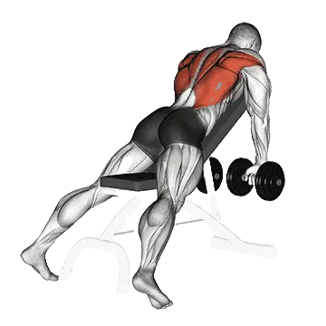

Chest-supported dumbbell row
Chest-supported dumbbell row menampilkan berat rata-rata dan standar kekuatan sebagai referensi untuk kategori punggung. Otot utama: Latissimus dorsi.

Berat rata-rata: Menengah
Acuan untuk level menengah.
Pria
82 lb
Wanita
46 lb
Berat rata-rata Chest-supported dumbbell row [1RM]
| Level | ||
|---|---|---|
| Dasar | 20 lb | 15 lb |
| Pemula | 45 lb | 28 lb |
| Menengah | 82 lb | 46 lb |
| Mahir | 129 lb | 68 lb |
| Pro | 185 lb | 94 lb |
Catatan: standar ini adalah estimasi 1RM berdasarkan lifter rata-rata. Berat badan, usia, dan faktor pribadi lain dapat memengaruhi hasil. Lihat data detail pada tabel di bawah.
Standar kekuatan Chest-supported dumbbell row (lb)
Pria berdasarkan berat badan (lb) [1RM]
| Berat badan | Dasar | Pemula | Menengah | Mahir | Pro |
|---|---|---|---|---|---|
| 110 | 7 | 23 | 50 | 86 | 131 |
| 120 | 9 | 27 | 55 | 94 | 140 |
| 130 | 12 | 31 | 61 | 101 | 148 |
| 140 | 14 | 35 | 66 | 108 | 157 |
| 150 | 17 | 39 | 71 | 114 | 165 |
| 160 | 19 | 42 | 76 | 121 | 172 |
| 170 | 21 | 46 | 81 | 127 | 179 |
| 180 | 24 | 49 | 86 | 132 | 186 |
| 190 | 26 | 53 | 91 | 138 | 193 |
| 200 | 29 | 56 | 95 | 144 | 199 |
| 210 | 31 | 60 | 99 | 149 | 206 |
| 220 | 34 | 63 | 104 | 154 | 212 |
| 230 | 36 | 66 | 108 | 159 | 218 |
| 240 | 38 | 69 | 112 | 164 | 223 |
| 250 | 41 | 72 | 116 | 169 | 229 |
| 260 | 43 | 75 | 119 | 173 | 234 |
| 270 | 45 | 78 | 123 | 178 | 239 |
| 280 | 47 | 81 | 127 | 182 | 245 |
| 290 | 50 | 84 | 130 | 187 | 250 |
| 300 | 52 | 87 | 134 | 191 | 254 |
| 310 | 54 | 90 | 137 | 195 | 259 |
Pria berdasarkan usia [1RM]
| Usia | Dasar | Pemula | Menengah | Mahir | Pro |
|---|---|---|---|---|---|
| 15 | 17 | 38 | 69 | 110 | 158 |
| 20 | 19 | 44 | 79 | 126 | 180 |
| 25 | 20 | 45 | 82 | 129 | 185 |
| 30 | 20 | 45 | 82 | 129 | 185 |
| 35 | 20 | 45 | 82 | 129 | 185 |
| 40 | 20 | 45 | 82 | 129 | 185 |
| 45 | 19 | 43 | 77 | 123 | 175 |
| 50 | 18 | 40 | 73 | 115 | 165 |
| 55 | 16 | 37 | 67 | 106 | 152 |
| 60 | 15 | 34 | 61 | 97 | 139 |
| 65 | 14 | 30 | 55 | 88 | 126 |
| 70 | 12 | 27 | 50 | 79 | 113 |
| 75 | 11 | 24 | 44 | 70 | 101 |
| 80 | 10 | 22 | 40 | 63 | 90 |
| 85 | 9 | 20 | 36 | 56 | 81 |
| 90 | 8 | 18 | 32 | 51 | 73 |
Wanita berdasarkan berat badan (lb) [1RM]
| Berat badan | Dasar | Pemula | Menengah | Mahir | Pro |
|---|---|---|---|---|---|
| 90 | 9 | 19 | 34 | 53 | 75 |
| 100 | 11 | 21 | 37 | 56 | 79 |
| 110 | 12 | 23 | 39 | 59 | 82 |
| 120 | 13 | 25 | 42 | 62 | 86 |
| 130 | 15 | 27 | 44 | 65 | 89 |
| 140 | 16 | 28 | 46 | 67 | 92 |
| 150 | 17 | 30 | 48 | 70 | 95 |
| 160 | 18 | 32 | 50 | 72 | 97 |
| 170 | 19 | 33 | 52 | 74 | 100 |
| 180 | 20 | 34 | 53 | 76 | 102 |
| 190 | 21 | 36 | 55 | 78 | 104 |
| 200 | 22 | 37 | 57 | 80 | 107 |
| 210 | 23 | 38 | 58 | 82 | 109 |
| 220 | 24 | 40 | 60 | 84 | 111 |
| 230 | 25 | 41 | 61 | 86 | 113 |
| 240 | 26 | 42 | 63 | 87 | 115 |
| 250 | 27 | 43 | 64 | 89 | 117 |
| 260 | 28 | 44 | 65 | 90 | 118 |
Wanita berdasarkan usia [1RM]
| Usia | Dasar | Pemula | Menengah | Mahir | Pro |
|---|---|---|---|---|---|
| 15 | 13 | 24 | 39 | 58 | 80 |
| 20 | 15 | 28 | 45 | 67 | 91 |
| 25 | 15 | 28 | 46 | 68 | 94 |
| 30 | 15 | 28 | 46 | 68 | 94 |
| 35 | 15 | 28 | 46 | 68 | 94 |
| 40 | 15 | 28 | 46 | 68 | 94 |
| 45 | 14 | 27 | 44 | 65 | 89 |
| 50 | 14 | 25 | 41 | 61 | 83 |
| 55 | 13 | 23 | 38 | 56 | 77 |
| 60 | 11 | 21 | 35 | 51 | 70 |
| 65 | 10 | 19 | 31 | 46 | 64 |
| 70 | 9 | 17 | 28 | 42 | 57 |
| 75 | 8 | 15 | 25 | 37 | 51 |
| 80 | 7 | 14 | 22 | 33 | 46 |
| 85 | 7 | 12 | 20 | 30 | 41 |
| 90 | 6 | 11 | 18 | 27 | 37 |
Catatan: berat dumbbell pada tabel dihitung untuk satu dumbbell.
Catat dan analisis di aplikasi Shiba
Lihat beban, repetisi, dan perkembangan di satu tempat.
Cara membaca tabel
| Level | Deskripsi | Distribusi |
|---|---|---|
| Dasar | Menguasai teknik yang benar dan berlatih konsisten minimal 1 bulan. | Bawah 5% |
| Pemula | Berlatih konsisten minimal 6 bulan. | Atas 80% |
| Menengah | Berlatih konsisten lebih dari 2 tahun. | Atas 50% |
| Mahir | Berlatih terencana lebih dari 5 tahun. | Atas 20% |
| Pro | Menekuni latihan ini secara khusus lebih dari 5 tahun. | Atas 5% |
Latihan lainnya
Punggung
Close-grip lat pulldown
Punggung
Machine reverse fly
Punggung / Machine
Reverse-grip lat pulldown
Punggung
Neutral-grip pull-up
Punggung / Bodyweight
Straight-arm pulldown
Punggung
Cable reverse fly
Punggung / Cable
Yates row
Punggung
Bent-over dumbbell row
Punggung / Dumbbell
Back extension
Punggung
Bench pull
Punggung
Machine back extension
Punggung / Machine
Barbell pullover
Punggung / Barbell